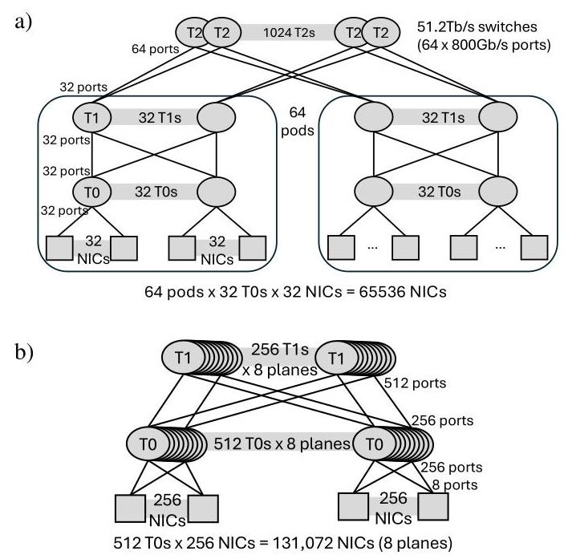
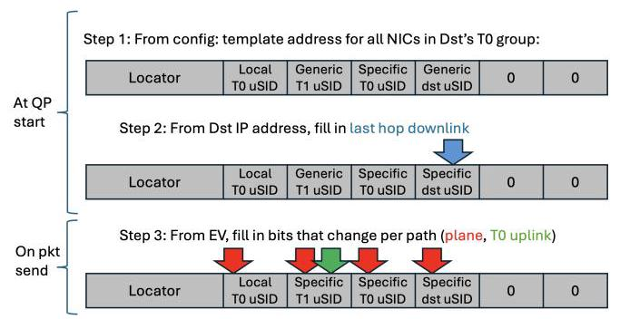
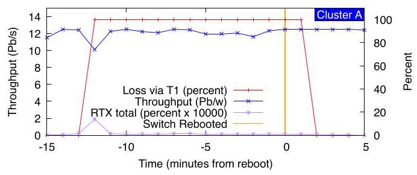
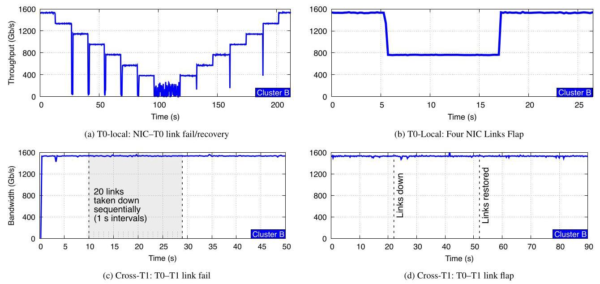
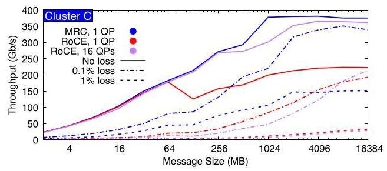
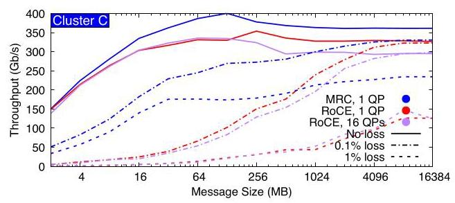
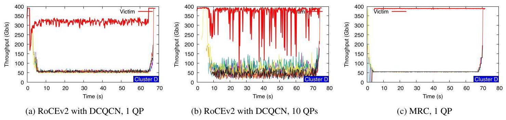

Resilient AI Supercomputer Networking using MRC and SRv6 深度解读
作者：OpenAI、Microsoft、AMD、Broadcom、NVIDIA 联合作者，包括 Joao Araujo、Alex Chow、Mark Handley、Jitendra Padhye、Michael Papamichael、Amin Tootoonchian、Lihua Yuan、Torsten Hoefler、Jithin Jose、Abdul Kabbani、Guohan Lu、Yang Wang、Rip Sohan、Eric Spada、Sayantan Sur 等。
会议/期刊：OpenAI / OCP technical report, 2026。
一句话总结：这篇论文把 AI 训练后端网络的可靠性问题从“交换机动态路由和人工运维快速止血”转移到“端侧 MRC 对大量显式路径做 packet spraying、拥塞规避和故障绕行”，并用 SRv6 静态源路由与多平面拓扑支撑 100K+ GPU 级别的生产训练。
一、问题定义
这是一篇明显的非 First 类型工作：它不是第一次提出数据中心多路径、RDMA、packet spraying 或源路由，而是在超大规模同步 AI 预训练网络这个场景下，把这些思想重新组合成一个生产级协议栈和运维模型。原始问题是：同步 pretraining 的每一步都被最慢通信轮次决定，通信尾延迟、flow collision、incast、链路抖动和交换机故障都会被大量 GPU 的 lock-step 执行方式放大成训练吞吐下降甚至作业失败。
现有 RoCEv2 + ECMP + PFC/DCQCN 的主流方案把单个 QP 绑定到少数 hash 路径，依赖 lossless Ethernet 和动态路由维持可达性。这在小规模集群中可用，但在 100K GPU 级别会暴露三个缺口：ECMP hash 碰撞会制造热点；PFC 在 incast 下会扩散 head-of-line blocking；动态路由和交换机控制面在故障时收敛慢且难诊断。论文的切入点就是：如果训练作业已经要求极低尾部抖动，那么网络协议必须把“路径是否健康、是否拥塞、是否可替换”变成每个连接自己能快速判断的局部问题。
动机评估：动机很 solid。作者没有只停留在概念论证，而是给出 OpenAI 和 Microsoft 大规模训练集群中的生产事件：50K GPU 训练中 NIC-T0 transceiver flap 造成约 1 分钟 25% 吞吐下降但作业不崩；75K GPU 训练中 T1 交换机故障影响约四分之一 QP、丢约 580K 包但作业吞吐很快恢复。弱点是这些生产结果受保密限制，缺少完整模型、训练 step-time 分布和长期故障统计，因此读者能判断“确实可用”，但很难独立复现实验强度。
核心 Insight：论文最关键的洞察是：在冗余足够高的 multi-plane Clos 中，失败路径不必由交换机动态路由“修复”，可以由 NIC 端的 MRC 直接从活动 EV 集合中移除并替换；一旦端侧协议能在微秒级绕开坏路径，交换机网络反而可以更静态、更可观测、更少控制面行为。换句话说，拓扑冗余提供“可绕行空间”，MRC 提供“端侧选择机制”，SRv6 提供“路径可解释性”。
二、相关工作
论文把相关工作按“负载均衡粒度”和“路径控制位置”组织，而不是按时间线罗列。
第一类是传统 RoCEv2/ECMP 与围绕它的 flow-level 改进。ECMP 的优点是简单，缺点是每个 flow/QP 的路径粒度太粗；Hedera、MicroTE、Flowlet switching、Presto、DLB、PLB、FlowBender 等工作尝试用集中式、交换机侧或主机侧反馈改善流放置，但 AI 训练通信突发、同步且高负载，反应速度和控制精度仍然不够。
第二类是应用层或连接层 multipath。NCCL QP scaling、MSCCL、NCCLX、UCCL 等在 collective 层面把通信拆成多个 QP 或多个通道，能缓解 flow collision，但无法让一个 QP 在每包粒度使用数百条路径，也无法统一处理链路故障和交换机灰故障。MPTCP 和 Falcon 这类多子流方案能提升利用率，但需要 per-subflow 状态，设计目标也不完全等同于 AI 后端 RDMA fabric。
第三类是 packet spraying 与 feedback-driven multipath。RPS、Homa、NDP 等展示了 per-packet 负载均衡的潜力，但如果完全 oblivious，就难以处理非对称拥塞和 partial/gray failure；MPRDMA、Hermes、REPS 等引入 per-path 状态和 ECN/delay 反馈，更接近 MRC 的方向。MRC 的差异在于把这些能力做进 RoCE RC 语义的最小扩展，并明确面向 best-effort Ethernet、packet trimming 和硬件 NIC 实现。
第四类是 UET、SRv6 和 AI 网络拓扑共设计。UET 标准化了面向 HPC/AI 的新传输协议和 packet trimming，MRC 借鉴其设计但仍保留 RoCE/Verbs 兼容子集。SRv6/uSID 相关工作验证了显式路径放置的可行性；Alibaba HPN、rail-only 等 AI 网络设计探索了两层或低成本拓扑。本文的贡献是把 multi-plane topology、MRC 和 static SRv6 在 100K+ GPU 生产系统中结合起来。
三、技术挑战
挑战 1：100K+ GPU 的 full-bisection 网络不能无限堆层数。 传统 800Gb/s 单平面三层 Clos 用 64 端口 51.2Tb/s 交换机只能自然扩展到约 64K NIC；如果继续上 100K GPU，就要四层、超卖或多 rail，带来更高延迟、更多光模块、更多故障点和更复杂的运维。
挑战 2：同步训练把网络尾部事件放大。 Pipeline/data/tensor/expert parallelism 的通信轮次会被最慢 transfer 决定；平均吞吐好不够，只要少数流因 hash collision、incast 或重传慢掉，就会拖住整步训练。
挑战 3：lossless RoCE 的拥塞控制与 packet spraying 天然冲突。 一个 QP 如果每包喷洒到数百条路径，PFC 看到的是跨路径聚合的复杂拥塞，容易把一个 collective 的阻塞传播给其他 collective，形成 head-of-line blocking。
挑战 4：故障恢复必须比动态路由收敛快得多。 高 radix 两层拓扑中，某个目的地经由哪些 T1 可达会随下行链路故障变化，维护大量 ECMP set 很难；更麻烦的是交换机软件或控制面可能显示链路 up，但 dataplane 已经不转发。
挑战 5：运维团队需要可定位的路径健康信息。 生产集群有成千上万交换机和海量链路，不可能靠人工快速判定每条 flappy link 是否影响训练；系统需要自动判断“哪条物理路径坏了、是否要维修、是否可以继续放在服务中”。
四、解决方案
整体思路
论文的整体方案是三层共设计：用 multi-plane Clos 提供大量物理冗余，用 MRC 在每个 QP 内按 EV 喷洒到多个 plane 和多条路径，并用 SRv6/uSID 把每个 EV 映射成一条静态、可解释的显式路径。交换机只执行静态转发；拥塞、丢包、坏路径识别和重传主要由 NIC 端完成；Clustermapper 则在运维层持续探测路径健康并辅助 denylist 策略。

图 1 是论文的拓扑论证核心。把 800Gb/s NIC 拆成 8 条 100Gb/s plane 后，同样 51.2Tb/s 交换机从 64 个 800G 端口变成 512 个 100G 端口，两层 Clos 就能覆盖 131,072 个 NIC，而传统三层 800G 单平面示例只到 65,536 个 NIC。这里的关键不是“100G 比 800G 快”，而是高 radix 带来的二层可达规模、更多路径多样性、更低 hop 数，以及单条链路故障只损失更小容量份额。
贯穿示例
可以把一次训练中的 RDMA write 想成：GPU A 要把一块 tensor shard 写到 GPU B 所在节点内存。传统 RoCE 会让这个 QP 基本沿着一个 ECMP hash 选中的路径走；如果这条路径和其他流撞在同一条 T0-T1 链路上，或者链路瞬时 flap，这个 transfer 就会变慢甚至触发 QP failure。
在 MRC 中，GPU A 的 NIC 在 QP 启动时生成一个 EV set，比如每个 plane 选若干 EV，总数可达 128 到 256 个。发送 tensor shard 时，每个 packet 都带 RDMA virtual address 和 remote key，因此即使乱序到达，接收端 NIC 也能直接放到正确内存地址。每个 packet 轮流使用不同 EV；在 SRv6 模式下，EV 不只是 hash entropy，而是可算法映射成“走哪个 plane、哪个 T0 uplink、哪个 T1、哪个目标 T0/downlink”的显式路径。
如果某个路径 ECN 变多，接收端通过 SACK 把信号回传，发送端暂时不用该 EV；如果某个 packet 真丢了，发送端先假设该路径坏了，把 EV 移出活动集合，用 backup EV 替代并选择性重传；如果之后 probe 证明路径恢复，再把 EV resurrect。这样一次 tensor transfer 不再押注单一路径，而是在大量路径上连续试探、避让和恢复。
关键技术点
1. MRC 扩展 RoCE RC，但只保留 AI 训练需要的子集。 MRC 仍使用 Verbs API 和 QP 抽象，但在 transport 层只支持 RDMA write 和 write-with-immediate。这个取舍牺牲了通用性，换来更小实现面：每个数据包携带最终写入地址，接收端能 out-of-order memory placement；SACK/NACK 支撑快速选择性重传；packet trimming 把本来会因拥塞被丢弃的包裁掉 payload 后优先送达目的端，从而触发快速 NACK，并把“拥塞丢包”和“链路/路径故障丢包”区分开。
2. EV 是 MRC 的路径句柄。 在普通 ECMP 网络中，EV 被拆到 UDP source port 和 IPv6 flow label 里参与 hash；在 SRv6 网络中，EV 仍然随 packet 携带，供接收端 echo 拥塞/丢包状态，同时通过算法映射生成 SRv6 外层目的地址。每个 EV 维护少量健康状态，MRC 用 ECN 做负载均衡信号，用 packet loss 做路径故障信号，用 probe 做恢复验证。

图 3 展示了 EV 到 SRv6 地址的压缩映射。QP 启动时，NIC 先从配置中拿到某类目的节点的通用地址模板，再填入目的端最后一跳 downlink；每次发包时，再把 EV 中变化的 plane 和 T0 uplink 等字段拷到对应 uSID。这个设计避免为每条路径同时保存完整 SRv6 地址和 EV 状态，也让“某个 EV 坏了”可以还原成明确的物理路径。
3. 静态 SRv6 让交换机退回简单 dataplane。 论文使用 uN uSID：外层 IPv6 目的地址里嵌入一串 16-bit uSID，每个交换机匹配自己的 locator/uSID 后左移地址，让下一跳 uSID 进入查表位置，再按静态表转发。交换机不需要动态重算 ECMP；如果路径不通，MRC 端侧停止用该 EV。作者强调这反而提升了可理解性，因为不会出现 MRC 刚避开坏路径、动态路由又改变 hash 映射的双重自适应。
4. Clustermapper 补上运维闭环。 每个节点运行 agent，以毫秒级频率用 SRv6 source-routed probes 探测本地 T0、T1 以及 T0-T1 链路。由于探测包和 MRC 数据包走同一类显式路径，结果更接近 forwarding-plane ground truth，而不是交换机控制面自报状态。Clustermapper 既可用于维修调度，也可在 NIC-T0 链路高丢包但未完全 down 时生成 denylist，弥补 MRC 难以判断问题在本端还是远端的局限。
5. 保持 plane 间负载均衡是设计不变量。 当 MRC 移除一个 EV 时，会优先从同一 plane 的 backup EV 替换，保持各 plane 均匀承载，避免因不同 flow 的轻微上行拥塞造成 false incast。代价是：如果后端网络混有 single-path traffic，或者某个 plane 集中丢失很多 T0-T1 链路，MRC 会被最差 plane 限制；如果某个 NIC-T0 plane 高丢包但没完全掉线，也需要 Clustermapper policy 介入。
与已有方案的对比
相对 RoCEv2 + ECMP，MRC 的优势是把一个 QP 的流量拆到数百条路径上，避免单个 hash collision 决定性能；相对 RoCE + 多 QP，MRC 不需要把负载均衡责任推给 collective 层，也能直接处理路径级 loss 和拥塞；相对动态路由，MRC + SRv6 把故障处理做成端侧快速局部反应，并给出物理路径可观测性。
它的局限同样清楚。第一，MRC 需要 NIC、交换机和运维系统协同实现，不是纯软件升级。第二，论文当前只支持 AI workload 需要的 RDMA write 子集。第三，整张 NIC transceiver flap 会让所有端口一起丢失，QPs 仍可能失败。第四，1% 持续全平面随机丢包下 MRC 也只能得到约三分之一目标吞吐，这说明它适合“绕过局部/短时故障”，不是容忍全网长期高损耗。
五、实验评估
实验设定
论文使用四个集群。Cluster A 和 B 是 NVIDIA GB200 + CX8 800Gb/s NIC 的两层 multi-plane 网络，分别是 4 x 200Gb/s 和 8 x 100Gb/s；Cluster C 是 AMD MI355 + Pollara 400Gb/s NIC + Broadcom Tomahawk 5 的 4 x 100Gb/s multi-plane；Cluster D 是 RTX 6000 + Broadcom Thor Ultra 的 400Gb/s single-plane 小规模 testbed。主要指标包括训练 job throughput、packet loss、ib_write_bw/ib_write_lat、NCCL sendrecv 带宽、all-reduce/all-to-all collective bandwidth，以及 incast victim flow 吞吐。
Baseline 主要是 RoCEv2，配合 ECMP、PFC 和 DCQCN；MRC 则运行在 best-effort Ethernet 上，关闭 PFC，并使用 SRv6。需要注意，论文承认没有一个大型 RoCE 部署可直接和大型 MRC 生产集群对照，因此 RoCE 对比主要来自 Cluster C/D 小规模 testbed。
主要实验与结论
生产训练结果。 Cluster A 中，T0-T1 link flaps 可以持续出现但几乎不影响大规模同步训练，因此维修优先级可降低。一个 50K GPU 生产 pretraining 事件中，T0 switch optical transceiver 连续 flap 4 条 NIC-T0 链路，三个活跃节点受影响；吞吐在约 1 分钟内下降约 25%，随后立即恢复，作业没有崩溃，QP 没有失败。75K GPU 作业中，作者观察到 4 次 T1 switch reboot；其中一次约四分之一 QP 受影响、丢约 580K 包，交换机在 t=2 分钟恢复转发，作业吞吐只在初始故障时短暂下降，真正 reboot 时无明显影响。

图 8 的红线显示 T1 交换机停止转发时经由该 switch 的 loss 接近 100%，紫线显示重传/丢包事件可见但很小，蓝线的总训练吞吐只在故障初期出现短暂下探。这张图支撑了论文最强的生产论点：当 MRC 已经把坏 EV map out 后，后续 switch reboot 不再是必须协调训练团队的大事件。
点对点性能。 Cluster B 上，MRC 在 32KB message 下 T0-local 和 cross-T1 都达到约 770Gb/s，约为理论峰值的 96%；2B message 的近似 one-way latency 分别是 5.09us 和 6.54us。也就是说，MRC 的大包吞吐没有因为跨 T1 明显受限，小包延迟则主要体现额外 switch hops 和协议控制路径开销。
链路和交换机故障。 NIC-T0 链路逐条失败时，吞吐按剩余 plane 容量阶梯式下降并在恢复时回升；单个 CX8 NIC 的 8 条链路中 flap 4 条时，MRC 稳定在约一半额定带宽，并在恢复后迅速回满。T0-T1 链路更容易被路径多样性吸收：连续 down 20 条或同时 flap 8 条时，总吞吐几乎不受影响。T0 switch down 会造成约 100Gb/s 稳态带宽下降；T1 switch down 在 cross-T1 四 QP 实验中没有稳态带宽下降。

图 9 很好地区分了故障位置的重要性：NIC-T0 failure 直接损失本 NIC 的 plane 容量，所以曲线阶梯式下降；T0-T1 failure 则被每个 QP 的大量候选路径稀释，20 条链路依次下线或 8 条链路同时 flap 仍基本维持接近 1.6Tb/s 的双向吞吐。
路径级 loss 和负载均衡。 在 Cluster B 中，作者把某个 EV 配置成 20% packet drop，并把系统限制为 8 个 plane、每 plane 2 条路径以便观察；约 51s 触发丢包后，EV-A 立即 inactive，EV-B 替代，端到端带宽保持 line-rate。两流共享同一 EV 的负载均衡实验中，MRC 通过 ECN 检测拥塞，把一个 flow 迁移到 EV-B，两个 flow 在迁移过程中都保持接近峰值带宽。
NCCL 规模实验。 Cluster B 上使用 NCCL-tests sendrecv，在 42K GPU 规模、较大 message size 下达到最高 92GB/s per-NIC throughput。这不是完整训练 benchmark，但说明 MRC 能支撑真实 collective library 的大规模稳定通信。
与 RoCE 的 collective 对比。 Cluster C 的 64 GPU testbed 用同样 GPU/NIC/switch/aggregate bandwidth 比较 RoCE 和 MRC：RoCE 使用 400Gb/s 单平面 ECMP + PFC/DCQCN；MRC 使用 4 x 100Gb/s plane + SRv6，关闭 PFC。Ring all-reduce 中，RoCE 1 QP 在大 message 下常只达到约一半可能吞吐，16 QP 有帮助但超过 8 QP 收益很小；MRC 1 QP spraying 256 paths 的表现优于 RoCE 16 QP。0.1% loss 对大 message MRC 影响很小，1% loss 下 RoCE 基本不可用，MRC 也只剩约三分之一目标吞吐。

图 16 的价值在于把“QP scaling 可以解决 RoCE hash collision”的常见直觉压低了：紫色 RoCE 16 QP 比红色 RoCE 1 QP 好，但蓝色 MRC 1 QP 在大消息段仍明显更高。虚线还说明 MRC 的 selective retransmission 能吸收 0.1% loss，但并不神化协议，1% 全局随机 loss 已经超过持续训练可接受范围。
All-to-all 中，RoCE 因同时活跃 QP 更多，负载均衡问题稍弱，但 QP scaling 反而不一定有益；MRC 在所有 message size 下都优于 RoCE，尤其是在 bandwidth-bound 区域。0.1% loss 下，RoCE 大 message 退化不明显，因为许多 QP 并行能掩盖少量重传；小 message 则退化严重，MRC 的 SACK 重传优势更明显。

图 17 说明 MRC 的优势并不只来自 ring all-reduce 这种单入单出模式。All-to-all 下 RoCE 的多 QP 已经自然分散了部分流量，但 MRC 仍在大多数区间保持更高吞吐，尤其是在小消息和丢包条件下更稳定。
Collateral damage。 Cluster D 的 7-to-1 incast + victim flow 实验直接检验 PFC/DCQCN 是否会伤害无关流。RoCE + DCQCN 1 QP 时 victim flow 平均下降约 25%；8 QP 时平均影响小一些，但存在 1 秒窗口掉到 100Gb/s，即相对 400Gb/s 最优值下降 75%。MRC 则几乎完美分享 incast bottleneck，并且不影响 victim flow。

图 18 是 PFC/DCQCN 问题最直观的一张：RoCE 曲线里 victim flow 被 incast 拖出明显锯齿甚至深谷，而 MRC 的 victim 基本贴近 400Gb/s。它支撑了论文关闭 PFC、使用 best-effort + trimming + selective retransmission 的设计选择。
结论支撑性分析
实验整体能支撑论文的主要工程结论：MRC 可以利用 multi-plane 冗余绕过大量链路/T1 故障；SRv6 静态路径让故障定位和运维动作更简单；在小规模可对比环境下，MRC 比 RoCE/QP scaling 更能避免 hash collision 和 incast collateral damage。
但也有边界。第一，生产结果以案例展示为主，不是系统化的长期统计分布。第二，MRC 与 RoCE 的直接性能对比没有在同等 50K/75K GPU 生产规模上做。第三，论文的硬件实现横跨多厂商最新 NIC/交换机，推广到普通集群需要生态支持。第四，MRC 对全网持续高随机丢包的表现有限，真正依赖的是“故障局部化 + 快速绕行”这个前提。
六、附加洞察
结论 1：预训练启动阶段可以不预先 map out 所有坏 T0-T1 路径。
出处：Section 2.4 / Figure 4。
推理链条：MRC QP 启动时先用大 EV set 和 backup EV set 喷洒；部分路径如果已坏，会丢包并触发 EV 替换；75K GPU 作业启动时，即便不预填 denylist，loss rate 也在数分钟内降到每 NIC 每秒 1 次以下，第一分钟每 QP 少于 5 个包丢失；由于大作业本来要缓慢 ramp up 避免电力冲击，这个瞬态对训练时间影响很小。这个结论不是说 Clustermapper 不重要，而是说明 T0-T1 已知坏链路对长寿命 QP 的启动性能没有作者原先可能担心的严重。
结论 2：反向控制包也需要独立维护“已知可用”的 EV。
出处：Section 2.4 Reverse Paths。
推理链条：MRC 的 forward EV set 由 SACK/NACK 更新，但 ACK/SACK/NACK 自己也要走回程路径；某些 collective 在某一时刻是单向通信，不能假设对端有 data traffic 可更新 reverse EV；直接反转 SRv6 forward path 又不总是可行。因此作者维护小型 reverse EV set，每个 plane 至少一个 EV，并在入站活跃但无出站数据时每 RTT 发随机 EV probe，probe 成功才作为该 plane 的反向 EV。这是协议细节，但它揭示了 packet spraying 系统里“控制面包本身也要抗故障”的问题。
结论 3：plane 均匀负载既是性能策略，也是诊断工具。
出处：Section 4 Inter-plane Loading。
推理链条：MRC 把被移除 EV 替换为同 plane EV，保持各 plane 负载相等；这样可避免 mild congestion 导致某些 plane 假性 incast，同时让正常状态下各 plane 的网络统计应当相似；如果某个 plane 显著变差，通常就是网络问题信号。薄弱点在于这个 invariant 假设后端网络主要跑 MRC，如果混入 single-path traffic 或某 plane 大量 T0-T1 失效，最差 plane 会限制整体吞吐。
结论 4：在 MRC 环境中，flapping link 不一定要立刻 administratively down。
出处：Section 3 Operations / Figure 5。
推理链条：传统运维会先禁用抖动链路，维修验证后再启用；MRC 会在链路掉包时把对应 EV map out，并通过 probes 判断何时恢复；因此把链路留在服务中反而能在它可用时自动利用，在不可用时自动避开，还减少维修时对训练团队的协调。这个结论依赖 MRC 的快速重传和 probe 机制，不能直接迁移到普通 RoCE 网络。
结论 5：DCQCN 调参难点来自 traffic-pattern specificity，而不只是参数没调好。
出处：Appendix / Figure 22。
推理链条：作者在 15-to-1 incast 中测试三套推荐 DCQCN profile；默认 profile 在少于 10 个 flows 时还能控队列，之后进入 PFC mode；更 aggressive 的 profile 控住队列但有时空队列，导致约 10% bottleneck throughput 损失；最 aggressive profile 平均利用率更低，总吞吐比 line-rate 慢 20%。这说明 DCQCN 的“减少 PFC”并非免费，且对流到达模式敏感。
七、总结与评价
这篇论文的核心贡献不是发明单个全新机制，而是把 multi-plane topology、MRC packet spraying、selective retransmission、packet trimming、SRv6 static source routing 和 Clustermapper 运维探测组合成一个可生产部署的 AI supercomputer 网络方案。它最强的亮点是系统边界划得清楚：交换机保持静态和简单，NIC 负责快速路径选择，运维系统负责持续 ground-truth 探测。
最大的不足是评估中的可复现性和可比性有限。生产案例很有说服力，但缺少长期统计和对照组；RoCE 对比只能在小 testbed 上完成；很多收益依赖最新 NIC/交换机硬件实现与多厂商协作。后续值得关注的是：MRC 规范开放后，第三方能否复现类似效果；它与 UET/Falcon/应用层 collective 优化如何共存；以及在更异构、更混部的后端网络中，plane-evenness 和静态 SRv6 的假设是否仍然成立。
八、章节脉络与段落速览
- Abstract：概括 MRC、multi-plane topology 和 SRv6 三件套如何让超大训练集群绕过网络故障。
-
¶1 指出同步预训练受尾延迟支配，并概括三项方案：MRC、多平面两层拓扑、SRv6 静态源路由。
-
Section 1 · Introduction：从训练规模、尾延迟、运维约束引出 MRC 与静态源路由。
- ¶1 说明 100K GPU 级同步训练中，通信轮次由最慢 transfer 决定。
- ¶2 把 outlier、网络故障和训练作业失败联系起来，并列出负载均衡、incast 和故障绕行三项需求。
- ¶3 强调小团队运维大规模网络时不能依赖人工快速修复，协议栈需要默认容错。
- ¶4 介绍 MRC 是 RoCE RC 的最小扩展，借鉴 UET，但只保留 AI workload 需要的 RDMA write 子集。
- ¶5 用 Figure 1 引出 multi-plane topology 与 MRC 的协同。
- ¶6 说明作者关闭动态路由、采用 SRv6 静态源路由的反直觉设计。
-
¶7 交代 MRC/SRv6 在多厂商 NIC 和交换机上的实现、生产部署和 OCP 规格发布。
-
Section 2 · Multi-plane Topology Co-Design：论证拓扑、协议和源路由为什么要一起设计。
- ¶1 比较 800G 单平面三层 Clos 的规模限制。
- ¶2 说明把 800G NIC 拆成 8 x 100G plane 后，两层 Clos 可覆盖 131,072 GPU。
- ¶3 列出多平面方案的延迟、成本、功耗、冗余和故障影响优势。
- ¶4 指出多平面也要求 workload 能跨 plane 均衡并容忍链路/NIC 端口失败。
- 2.1 · MRC Overview：解释 MRC 的 packet spraying、best-effort、重传和拥塞反馈。
- ¶1 说明 MRC 支持 QP/Verbs 抽象但只支持 write 类操作。
- ¶2-6 依次介绍包内地址、EV、关闭 PFC、SACK 选择性重传和 packet trimming。
- ¶7-9 说明 EV 均分到 plane，ECN 用作内部路径负载均衡信号。
- ¶10 说明 packet loss 会让 MRC 假定路径失败，并通过 probes 验证恢复。
- ¶11 总结 MRC 可在几十微秒级检测并绕过路径故障。
- 2.2 · Static Segment Routing：解释为什么不用动态路由。
- ¶1 说明高 radix 两层拓扑中动态维护大量 ECMP set 很难。
- ¶2 说明 MRC 与动态路由双重自适应会让行为更难理解。
- ¶3 说明静态 ECMP 仍缺少 EV 到物理路径的可解释映射，因此转向源路由。
- ¶4-5 介绍 SRv6/uSID 与 uN 风格显式命名每跳交换机。
- ¶6 解释 uSID shift forwarding，并强调可 line-rate 执行且静态表通常不变。
- ¶7 说明 MRC 使用 IPv6-in-IPv6 封装，外层走 SRv6，内层给目标 NIC。
- 2.3 · Mapping EVs to SRv6 Addresses：说明 EV 如何压缩表示显式路径。
- ¶1-2 说明 EV 在 ECMP 和 SRv6 模式下都要随 packet 携带，供回传状态。
- ¶3 提出 EV 与 SRv6 地址的算法映射，避免保存重复路径状态。
- ¶4-5 解释 QP 启动时创建模板、发包时用 EV 填 plane 和 T0 uplink 字段。
-
2.4 · Choosing Working Paths：说明 MRC 如何选择、替换和探测可用路径。
- ¶1 说明静态源路由下资源管理从 routing 转移到 MRC。
- ¶2 说明 QP 启动时 EV 均分到 plane 并随机选路径。
- ¶3 介绍 Clustermapper、denylist 和 SRv6 带来的 forwarding-plane ground truth。
- ¶4-5 说明预训练启动时即使不预填 T0-T1 denylist，MRC 也能快速 map out 坏路径。
- ¶6 解释 75K GPU 启动实验中的 loss rate 下降和低影响。
- ¶7-9 说明反向 ACK/SACK/NACK 需要 reverse EV set 和 EV probe。
-
Section 3 · Operations：说明 MRC 如何改变故障处理和运维优先级。
- ¶1 设定目标：让小团队能运营超大训练网络。
- ¶2 说明 T0-T1 link flap 可低优先级维修，因为 MRC 只丢极少包并快速替换 EV。
- ¶3 说明作者从禁用 flappy link 转向让链路留在服务中，由 MRC 自行避让和恢复。
- ¶4 解释交换机软件 bug 和 control/dataplane divergence 为什么危险。
- ¶5 给出四个实验/生产集群的硬件与拓扑配置。
- ¶6 说明静态 SRv6 下 T1 异常可直接 reboot，而 NIC-T0 和 T0 故障仍需更谨慎。
- ¶7 说明四平面和八平面对 NIC port failure 的影响不同，但多数 transient 可继续训练。
- ¶8 引出 telemetry 对 root cause、调参和 MRC debug 的必要性。
- ¶9-10 解释 Clustermapper 每毫秒探测本地 T0/T1 并定位链路或交换机问题。
-
¶11 对比 SRv6 probes 与 pingmesh/ICMP，强调 dataplane 高频探测和路径无歧义。
-
Section 4 · Inter-plane Loading：讨论保持 plane 均衡的好处与代价。
- ¶1 说明 MRC 替换 EV 时保持同 plane，以避免 false incast。
- ¶2 说明 mixed single-path traffic 或单 plane 大量损坏会让最差 plane 成为瓶颈。
- ¶3 说明未完全 down 的高丢包 NIC-T0 plane 需要 Clustermapper policy 处理。
-
¶4 说明 plane 均衡让异常 plane 更容易被网络统计发现。
-
Section 5 · Experiments：用生产案例和 testbed 验证弹性、性能和 RoCE 对比。
- ¶1-2 说明四个 AI training clusters 和 T0-local/cross-T1 术语。
- 5.1 · Training Results：展示生产训练中的链路和交换机故障。
- ¶1-2 说明 MRC 已用于 frontier model 训练，多数后端故障不导致失败。
- ¶3-5 说明 50K GPU 作业中的 NIC-T0 transceiver flap 造成约 25% 短时下降但不崩溃。
- ¶6 说明 75K GPU 作业中 T1 switch failure/reboot 的吞吐影响很小。
- ¶7 指出 NIC transceiver 整体 flap 仍是单点故障。
-
5.2 · Testbed Results：在受控环境中测量不同故障和 traffic pattern。
- 5.2.1 给出 5.09us/6.54us latency 与约 770Gb/s bandwidth。
- 5.2.2 展示 NIC-T0、T0-T1 link down/flap 下的 graceful degradation 和快速恢复。
- 5.2.3 展示 T0 failure 导致约 100Gb/s 下降，而 T1 failure 不造成稳态下降。
- 5.2.4 展示 20% EV-level drop 会使坏 EV 立即 inactive 并由 backup EV 替代。
- 5.2.5 展示 ECN 触发 EV 间负载迁移且无可见吞吐损失。
- 5.2.6 展示 NCCL sendrecv 在 42K GPU 达到最高 92GB/s。
- 5.2.7 比较 MRC 与 RoCE 在 all-reduce/all-to-all、QP scaling 和 loss 下的表现。
- 5.2.8 展示 incast 下 RoCE/PFC/DCQCN 会伤害 victim flow，而 MRC 基本不伤害。
-
Section 6 · Related Work：把前人工作按负载均衡粒度、实现位置和拓扑方案分类。
- ¶1 介绍 flow-level ECMP 及集中式、交换机侧、主机侧改进。
- ¶2 介绍 RoCEv2 部署中的 application-level multipath 和 collective 层优化。
- ¶3 介绍 MPTCP/Falcon 类多子流方案。
- ¶4 介绍 packet spraying 与 feedback-driven per-path 状态方案。
- ¶5-6 对比 IRN/MPRDMA、UET 和 MRC 的关系。
- ¶7 说明 MRC 使用 SRv6 source routing 的差异。
-
¶8-9 对比 AI network topology co-design 和 hyperscaler failure experience。
-
Section 7 · Conclusions：总结 MRC 在多平面网络上的负载均衡、静态 SRv6、生产部署和运维收益。
-
¶1 重申 MRC 已在多厂商 800Gb/s NIC 和两层多平面 supercomputer 中部署，并让大型预训练作业绕过过去会导致失败的网络故障。
-
Section 8 · Acknowledgments / References / Appendix：补充参与者、引用和附录实验。
- Acknowledgments 列出跨组织工程和部署参与者。
- References 覆盖 ECMP、RoCE、packet spraying、SRv6、UET、AI collective 和 hyperscaler 网络故障文献。
- Appendix ¶1-3 用 Thor Ultra/Cluster D 补充 MRC 在单平面 400Gb/s testbed 中的 link failure 弹性。
- Appendix ¶4-6 用 RoCEv2 permutation microbenchmark 说明 flow collision 和 PFC/DCQCN 的差异。
- Appendix ¶7-10 补充 incast collateral damage 与 DCQCN profile tuning 的敏感性。